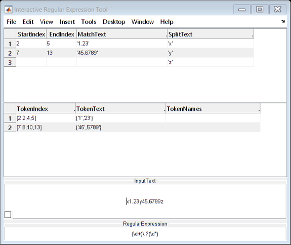

NATSORTFILES Examples
The function NATSORTFILES sorts filenames or filepaths in an array A (cell/string/struct) taking into account number values within the text. This is known as natural order or alphanumeric order. Note that MATLAB's inbuilt SORT function sorts text by character code, as does SORT in most programming languages.
NATSORTFILES does not just provide a naive alphanumeric sort, it also splits and sorts the file/folder names and file extensions separately, which means that shorter names come before longer ones. For the same reason filepaths are split at every path-separator character and each folder level is sorted separately. See the "Explanation" sections below for more details.
Other useful text sorting functions:
- Alphanumeric sort the rows of a string/cell/table/etc array: NATSORTROWS
- Alphanumeric sort of text in a string/cell/categorical array: NATSORT
- Sort text into the order of arbitrary/custom text sequences: ARBSORT
Note: NATSORTFILES calls NATSORT to provide the natural order text sort.
Contents
- Basic Usage
- Input 1: Array to Sort
- Input 2: Regular Expression
- Input 3+: Remove "." and ".." Dot Directory Names
- Input 3+: No File Extension
- Input 3+: Ignore File Path
- Inputs 3+: Optional Arguments
- Output 2: Sort Index
- Output 3: Debugging Array
- Explanation: Short Before Long
- Explanation: Filenames
- Explanation: Filepaths
- Regular Expression: Decimal Numbers, E-notation, +/- Sign
- Example: Decimal Comma and Decimal Point
- Bonus: Interactive Regular Expression Tool
Basic Usage
By default NATSORTFILES interprets consecutive digits as being part of a single integer, any remaining substrings are treated as text.
Aa = ["a2.txt", "a10.txt", "a1.txt"]; sort(Aa) % for comparison natsortfiles(Aa)
ans =
1×3 string array
"a1.txt" "a10.txt" "a2.txt"
ans =
1×3 string array
"a1.txt" "a2.txt" "a10.txt"
Input 1: Array to Sort
The first input A must be one of the following array types:
- a cell array of character row vectors,
- a string array,
- the structure array returned by DIR.
The sorted array is returned as the first output, making NATSORTFILES very simple to include with any code:
P = 'natsortfiles_test'; S = dir(fullfile('.',P,'A*.txt')); S = natsortfiles(S); for k = 1:numel(S) fprintf('%-13s%s\n',S(k).name,S(k).date) end
A_1.txt 17-Nov-2021 16:27:46 A_1-new.txt 17-Nov-2021 16:27:46 A_1_new.txt 17-Nov-2021 16:27:46 A_2.txt 17-Nov-2021 16:27:46 A_3.txt 17-Nov-2021 16:27:46 A_10.txt 17-Nov-2021 16:27:46 A_100.txt 17-Nov-2021 16:27:46 A_200.txt 17-Nov-2021 16:27:46
Input 2: Regular Expression
The optional second input argument rgx is a regular expression which specifies the number matching (see "Regular Expressions" section below):
Ab = ["1.3.txt", "1.10.txt", "1.2.txt"]; natsortfiles(Ab) % by default match integers natsortfiles(Ab, '\d+\.?\d*') % match decimal fractions
ans =
1×3 string array
"1.2.txt" "1.3.txt" "1.10.txt"
ans =
1×3 string array
"1.10.txt" "1.2.txt" "1.3.txt"
Input 3+: Remove "." and ".." Dot Directory Names
The dot directory names "." and ".." can be removed using the 'rmdot' option:
S = dir(fullfile('.','HTML','*')); {S(1:4).name} S = natsortfiles(S,[],'rmdot'); {S(1:3).name}
ans =
1×4 cell array
{'.'} {'..'} {'arbsort_doc.html'} {'arbsort_doc.png'}
ans =
1×3 cell array
{'arbsort_doc.html'} {'arbsort_doc.png'} {'arbsort_doc_01.png'}
Input 3+: No File Extension
For names that do not have file extensions (e.g. folder names, filenames without extensions) then the optional 'noext' argument should be used:
Ac = ["1.9", "1.10", "1.2"]; % names without extensions natsortfiles(Ac,'\d+\.?\d*') % by default the dot indicates the file extension natsortfiles(Ac,'\d+\.?\d*','noext')
ans =
1×3 string array
"1.2" "1.9" "1.10"
ans =
1×3 string array
"1.10" "1.2" "1.9"
Input 3+: Ignore File Path
By default the filepath (if provided) will be taken into account and sorted too (either split from the filename, or taken from the folder field). To ignore the path and sort by filename only simply specify the optional 'xpath' argument:
Ad = ["B/3.txt", "A/1.txt", "B/100.txt", "A/20.txt"]; natsortfiles(Ad) % by default sorts the file path too natsortfiles(Ad,[],'xpath')
ans =
1×4 string array
"A/1.txt" "A/20.txt" "B/3.txt" "B/100.txt"
ans =
1×4 string array
"A/1.txt" "B/3.txt" "A/20.txt" "B/100.txt"
Inputs 3+: Optional Arguments
Further inputs are passed directly to NATSORT, thus giving control over the case sensitivity, sort direction, and other options. See the NATSORT help for explanations and examples of the supported options:
Ae = ["B.txt", "10.txt", "1.txt", "A.txt", "2.txt"]; natsortfiles(Ae, [], 'descend') natsortfiles(Ae, [], 'char<num')
ans =
1×5 string array
"B.txt" "A.txt" "10.txt" "2.txt" "1.txt"
ans =
1×5 string array
"A.txt" "B.txt" "1.txt" "2.txt" "10.txt"
Output 2: Sort Index
The second output ndx is a numeric array of the sort indices, in general such that B = A(ndx) where B = natsortfiles(A,...). Note that NATSORTFILES provides a stable sort:
Af = ["abc2xyz.txt", "abc10xyz.txt", "abc2xyz.txt", "abc1xyz.txt"]; [out,ndx] = natsortfiles(Af)
out =
1×4 string array
"abc1xyz.txt" "abc2xyz.txt" "abc2xyz.txt" "abc10xyz.txt"
ndx =
4 1 3 2
Output 3: Debugging Array
The third output dbg is a cell vector of cell arrays, the inner cell arrays correspond to foldernames, filenames, and file extensions in A. The cell arrays contain any matched numbers (after converting to numeric using the specified SSCANF format) and all non-number substrings of A. These cell arrays are useful for confirming that the numbers are being correctly identified by the regular expression.
[~,~,dbg] = natsortfiles(Af);
dbg{:}
ans =
4×3 cell array
{'abc'} {[ 2]} {'xyz'}
{'abc'} {[10]} {'xyz'}
{'abc'} {[ 2]} {'xyz'}
{'abc'} {[ 1]} {'xyz'}
ans =
4×1 cell array
{'.txt'}
{'.txt'}
{'.txt'}
{'.txt'}
Explanation: Short Before Long
Filenames and file extensions are joined by the extension separator, the period character '.'. Using a normal SORT this period gets sorted after all of the characters from 0 to 45 (including !"#$%&'()*+,-, the space character, and all of the control characters, e.g. newlines, tabs, etc). This means that a naive sort returns some shorter filenames after longer filenames. To ensure that shorter filenames come first, NATSORTFILES splits filenames from file extensions and sorts them separately:
Ag = ["test_ccc.m"; "test-aaa.m"; "test.m"; "test.bbb.m"]; sort(Ag) % '-' sorts before '.' natsort(Ag) % '-' sorts before '.' natsortfiles(Ag) % short before long
ans =
4×1 string array
"test-aaa.m"
"test.bbb.m"
"test.m"
"test_ccc.m"
ans =
4×1 string array
"test-aaa.m"
"test.bbb.m"
"test.m"
"test_ccc.m"
ans =
4×1 string array
"test.m"
"test-aaa.m"
"test.bbb.m"
"test_ccc.m"
Explanation: Filenames
NATSORTFILES sorts the split name parts using an alphanumeric sort, so that the number values within the filenames are taken into consideration:
Ah = ["test2.m"; "test10-old.m"; "test.m"; "test10.m"; "test1.m"]; sort(Ah) % Wrong number order. natsort(Ah) % Correct number order, but longer before shorter. natsortfiles(Ah) % Correct number order and short before long.
ans =
5×1 string array
"test.m"
"test1.m"
"test10-old.m"
"test10.m"
"test2.m"
ans =
5×1 string array
"test1.m"
"test2.m"
"test10-old.m"
"test10.m"
"test.m"
ans =
5×1 string array
"test.m"
"test1.m"
"test2.m"
"test10.m"
"test10-old.m"
Explanation: Filepaths
For much the same reasons, filepaths are split at each file path separator character (note that for PCs both '/' and '\' are considered as path separators, for Linux and Mac only '/' is) and every level of the directory structure is sorted separately:
Ai = ["'A2-old/test.m"; "A10/test.m"; "A2/test.m"; "AXarchive.zip"; "A1/test.m"]; sort(Ai) % Wrong number order, and '-' sorts before '/'. natsort(Ai) % Correct number order, but long before short. natsortfiles(Ai) % Correct number order and short before long.
ans =
5×1 string array
"'A2-old/test.m"
"A1/test.m"
"A10/test.m"
"A2/test.m"
"AXarchive.zip"
ans =
5×1 string array
"'A2-old/test.m"
"A1/test.m"
"A2/test.m"
"A10/test.m"
"AXarchive.zip"
ans =
5×1 string array
"'A2-old/test.m"
"A1/test.m"
"A2/test.m"
"A10/test.m"
"AXarchive.zip"
Regular Expression: Decimal Numbers, E-notation, +/- Sign
NATSORTFILES number matching can be customized to detect numbers with a decimal fraction, E-notation, a +/- sign, binary/hexadecimal, or other required features. The number matching is specified using an appropriate regular expression, see NATSORT for details and examples.
Aj = ["1.23V.csv", "-1V.csv", "+1.csv" ,"010V.csv", "1.200V.csv"]; natsortfiles(Aj) % by default match integers. natsortfiles(Aj,'(+|-)?\d+\.?\d*') % match decimal fractions.
ans =
1×5 string array
"1.23V.csv" "1.200V.csv" "010V.csv" "+1.csv" "-1V.csv"
ans =
1×5 string array
"-1V.csv" "+1.csv" "1.200V.csv" "1.23V.csv" "010V.csv"
Example: Decimal Comma and Decimal Point
Many languages use a decimal comma instead of a decimal point. NATSORTFILES parses both the decimal comma and the decimal point, e.g.:
Ak = ["1,3.txt", "1,10.txt", "1,2.txt"]; natsortfiles(Ak, '\d+,?\d*') % match optional decimal comma
ans =
1×3 string array
"1,10.txt" "1,2.txt" "1,3.txt"
Bonus: Interactive Regular Expression Tool
Regular expressions are powerful and compact, but getting them right is not always easy. One assistance is to download my interactive tool IREGEXP, which lets you quickly try different regular expressions and see all of REGEXP's outputs displayed and updated as you type:
iregexp('x1.23y45.6789z','(\d+)\.?(\d*)') % download IREGEXP from FEX 48930.